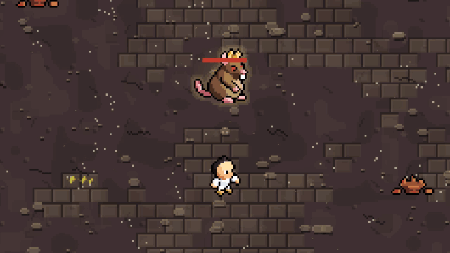
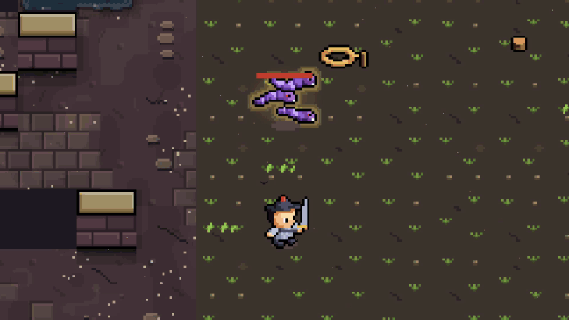
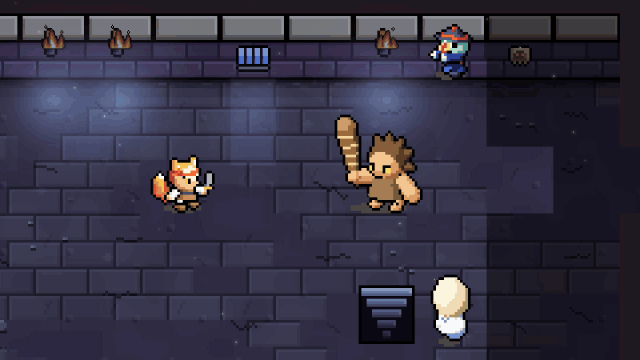
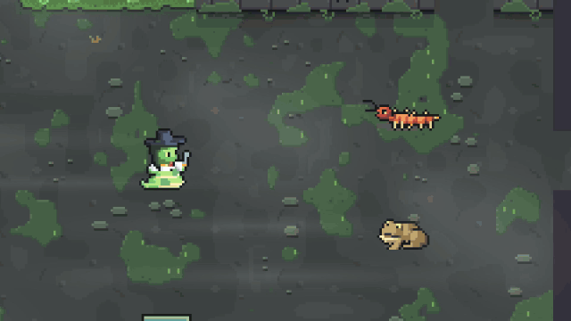

Seolhwa DungeonPress Kit
A turn-based roguelike RPG built from Korean folktales. The grim reaper, the gumiho and the dokkaebi play by the rules of their original stories.
Trailer
At a glance
- Developer
- Sungki Soft (solo developer, South Korea)
- Release
- October 2026 · iOS, Android
- Genre
- Turn-based roguelike RPG (permadeath, new dungeon every run)
- Price
- Free · one in-app purchase · optional revive ad only
- Languages
- Korean, English, Japanese
- Content
- 14 species × 12 classes, 8 gods, 4 dungeons + the underworld, 7 side dungeons, 155 yokai
About the game
I grew up on Dungeon Crawl Stone Soup and wanted something like it that felt good on a phone, so I made one. It's a classic roguelike played one-handed in portrait, fully offline.
The setting is Korean folklore. The creatures behave the way their stories say, and every one you meet goes into an in-game codex with its original tale.
- Sondol
A boatman executed on a king's suspicion, whose grudge is said to bring a bitter wind every late autumn. In the game, his wind knocks you back and off your feet. - Gawi ghost
The ghost of sleep paralysis that sits on your chest. It drifts through walls, and while it pins you, you can't cast or use skills. - Changgwi
The ghost of a tiger's victim, freed only by leading the next person to the tiger. It calls to you from out of sight in a familiar voice.
Scenes
Use these freely. GIFs are for previews and posts, MP4s are 1920×1080 silent originals. All footage is real gameplay.
Highlights

The Five-Element Cycle
Cast spells in the order wood, fire, earth, underworld, water and each one in the chain gets a bonus. Complete the circle and your energy refills and the next spell hits twice as hard.

Jeon U-chi doubles and the scroll
He splits into three doubles and casts fire pillars, lightning and whirlwinds. When hurt, he vanishes into a hanging scroll and steps back out in a spray of ink.

Tidal Wave, then Lightning
The tidal wave washes the poison pools into water. Strike an enemy standing in water with lightning and the shock spreads through the connected water to the whole group.

Jigwi sea of fire
Jigwi became a fire spirit out of longing for Queen Seondeok. He seals the entrance with flame, throws fireballs and fire pillars, then floods half the room with fire.

Uturi when the wings unfold
At half health his wings unfold and his millet soldiers crumble. He swoops in, strikes and flaps away, then charges on his dragon-horse.
Boss fights

Jihaguk Daejeok the hidden life
He keeps his life in a jar in another room, so until it breaks no blow brings him below 1 HP. Run, find the jar, smash it, and only then can he fall.

The Rat King my double
As in the tale of the rat that ate discarded fingernails, once it drops to 70% health it takes your shape and copies your own skills. A cat is the answer.

Jeoseung Saja, the Grim Reaper
He calls your name while he can see you, and after three turns it hits hard, armor or not. Break line of sight and the count resets, or set out one of the Offering Tables in the room and he stops calling.

Imugi the serpent who would be a dragon
It grows every ten turns, and on the third growth it becomes a dragon and breathes fire. At half health it floods the whole floor.

The Dokkaebi King
He summons goblin fire, breathes flame and throws you in a wrestling hold. At 60% health his club turns you into a squirrel.
Folktale moments

Daewangam Rock
Wait for low tide, walk out to the rock and take the flute Manpasikjeok. Play it and everything near the water falls asleep.

Kim Yu-sin's Sword
Plant a blade on the altar and hold out bare-handed against what comes for you. Survive, and the sword is yours.

The Yard of Two Suns
Walk through the scorching light and shoot one of the suns down with a great bow, as Daebyeolwang did in the Jeju creation myth.

Fox Wedding Procession
A fox wedding procession sleeps in one of the rooms. Whether you sneak past is up to you.

Dokkaebi Carnival
A goblin party that has partied itself to sleep. Walk through quietly.

Samsichung the worm within
Get hit and the worm crawls inside you. Drink, and it can't stand it and crawls back out, so strike then.

The Dragon Palace
In the Dragon Palace side dungeon you meet the turtle Byeoljubu and can free the captive rabbit.
Gods


Treasures

Skills and spells

Assassin stealth, shadow step, ambush, one cut
Vanish into stealth, step through the shadows behind the enemy, strike from behind, then finish a weakened foe in one cut.

Conjurer wisps, dokkaebi and jiangshi
Summon little goblin fires, a dokkaebi and jiangshi to fight beside you, and detonate a wisp next to the enemy.

Crow Warrior dash strike
A crow-folk warrior cuts through a line of enemies. There are 14 species and 12 classes, 168 combinations.

Spell tidal wave
A tidal wave sweeps the room. Each school of magic has its own spells.

Spell gate of the underworld
Open a gate to the underworld and drag enemies through it.
Screenshots


Icon and key art


For creators
You're welcome to make and monetize videos of the game, and to use any GIF, clip or image on this page.
If you'd like a code that unlocks the in-app purchase, just email me and I'll send one right away.
AI tools helped with the base code structure and the art. The design, folklore research and balance are my own.
Contact: opop4615@gmail.com · Discord: discord.gg/S8vNAkQ6rc